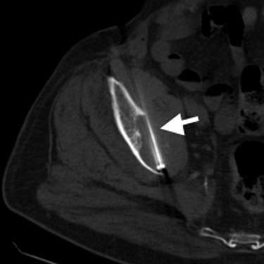

Jeffrey P. Guenette, M.D. / Scientific Publications
Solitary Painful Osseous Metastases: Correlation of Imaging-Features with Pain Palliation after Radiofrequency Ablation - A Multicenter American College of Radiology Imaging Network Study
Guenette JP, Lopez MJ, Kim E, Dupuy DE
Radiology. In Press.
 Abstract:
PURPOSE: To identify the correlation of pre- and post-ablation imaging features with pain relief, pain intensity, and patient
mood after radiofrequency (RF) ablation of solitary painful osseous metastases.
MATERIALS AND METHODS: This prospective, multicenter group trial was approved by each institutional review board. Participants were enrolled between November 1, 2001, and April 6, 2006. Written informed consent was obtained from all subjects, and patient confidentiality protocols were followed in compliance with HIPAA. Computed tomography (CT)-guided RF ablation and contrast–enhanced 1-month follow-up CT and/or magnetic resonance imaging were performed in 49 subjects (24 men, 25 women; age range, 34–83 years)
with a confi rmed malignant solitary bone lesion of maximum dimension ≤ 8cm that was causing intractable pain. Pain intensity and patient mood were measured before and after RF ablation. Tumor imaging features were recorded. Unadjusted and adjusted linear mixed-effects models, with a random intercept for each subject, were used to model patient mood, pain relief, and pain intensity scores at three times after ablation as a function of each tumor characteristic.
RESULTS: Decreased postablation tumor pain correlated with preablation tumor volume (P = .02) and pathologic fracture (P =
.01), while pain relief correlated with pathologic fracture (P = .03) and percentage of bone-tumor interface (BTI) ablated (P = .02). Conversely, presence of an irregular rim after ablation (P = .02) and rim thickness (P = .01) correlated with increased pain. There was no evidence in this study that RF ablation of increased tumor percentage or increased volume leads to better pain relief or decreased pain (P > .05).
CONCLUSION: Existing pathologic fracture and smaller tumor size appear to be predictive parameters of success when selecting
patients for palliative RF ablation of painful solitary osseous metastases. Successful palliation also appears to be related to the percentage of BTI ablated.
Return to Home Page